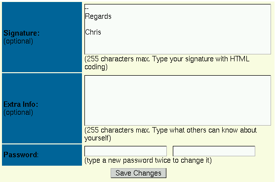

12.1. More than 255 characters of user extra information
By clicking on the icon with the title “Your Info” in the user account menu (see Chapter 6), you arrive at a HTML form where you can enter various pieces of information about yourself, in addition to your personal preferences. One of the fields, the “Extra Info” field, gives you the opportunity to tell something about yourself that other visitors can read when they click on your profile. However, you will not be able to enter more than 255 characters of extra information. That's a bit too few, even for moderately turbulent biographies. To change that, you must find out where that information is stored in the database.
Figure 12-1. Extra Info field of User Personal Information (Your Info)

Extra Info field of User Personal Information (Your Info)
That extra information is stored in the field "bio" of the nuke_users table (assuming the table prefix, $prefix, is "nuke" for you, see Section 3.7). Thus, what you have to do is log in your database and change the length of the bio field. Currently, it is defined as "tinytext" which gives the limitation of 255 characters (see MySQL String Types).
Once logged in the MySQL database, do on the MySQL prompt[1]:
alter table nuke_users modify bio text; |
This will give you the next possible (see MySQL Column Type Storage Requirements) maximum length of 2^16-2. That's a little less than 65KB of text. That should be enough text for your visitors to write a small story of their life.